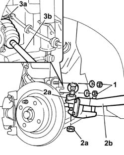

2110D53 left hand flange on differential - r+r
- Path
- Procedures > 21 GEARBOX UNIT > 2110 MANUAL GEARBOX WITH DIFFERENTIAL > 2110D MANUAL GEARBOX DIFFERENTIAL > 2110D53 left hand flange on differential - r+r
- Kind
- repair procedure (removal / refitting; the operation number is the code)
- Applies to
- all engines; all production periods
- Interactive page
- https://sloeber94.github.io/elrnDB-fDbl/en/#/2584588
Applies to: all engines; all production periods
 Removing
Removing
 Refitting
RefittingPlace the car on a ramp.
Op. 4450B02 LEFT FRONT WHEEL - R.R.
Op. 7055B54 PROTECTION/GUARD UNDER ENGINE - R.R.
1. Undo the bolts securing the shock absorber strut.
2. Undo the nut (2a) and, using the tool (2b), remove the track rod end from the steering knuckle.
3. Break the band (3a) and disconnect the sliding three-lobe joint (3b) from the flange on the differential.
 | Name | Country |
|---|---|---|
2b | Head extractor | 1.847.035.000 |

Applies to: all engines; all production periods
Op. 2110d52 L/H FLANGE ON DIFFERENTIAL - R + R WITH DRIVESHAFT REMOVED
Applies to: all engines; all production periods
Refitting
RemovingOp. 2110d52 L/H FLANGE ON DIFFERENTIAL - R + R WITH DRIVESHAFT REMOVED
Fit the drive shaft to the differential and fit the sliding joint gaiter retaining clamps.
Tighten the bolts fixing the shock absorber to the steering knuckle to torque.
 | Fastening | Component | Ø | Value (daNm) |
|---|---|---|---|---|
- | Nut | FRONT DAMPER | M10 x 1.25 | (Steering knuckle side) 12 |
Fit the track rod end balljoint onto the front hub steering knuckle.
Tighten to torque the nut securing the track rod to the hub steering knuckle.
| Fastening | Component | Ø | Value (daNm) |
|---|---|---|---|---|
- | Nut | ADJUSTABLE STEERING LINKS | M10 x 1.25 | 4.9 |
Op. 4450B02 LEFT FRONT WHEEL - R.R.
Lower the lift.
Op. 0010T41 MANUAL GEARBOX OIL - CHECK LEVEL AND TOP UP IF NECESSARY
Op. 7055B54 PROTECTION/GUARD UNDER ENGINE - R.R.
Remove the vehicle from the ramp.
Applies to: engines: 1.9 JTD 8V; all production periods
Removing
RefittingProceed with the removal
Op. 2710A40 DRIVESHAFT (ONE) LEFT OR RIGHT - R.R.
(Left side).
Proceed with the removal
Op. 2110d52 L/H FLANGE ON DIFFERENTIAL - R + R WITH DRIVESHAFT REMOVED.
Applies to: engines: 1.9 JTD 8V; all production periods
Refitting
RemovingProceed with the refitting
Op. 2110d52 L/H FLANGE ON DIFFERENTIAL - R + R WITH DRIVESHAFT REMOVED.
Proceed with the refitting
Op. 2710A40 DRIVESHAFT (ONE) LEFT OR RIGHT - R.R.
(Left side).